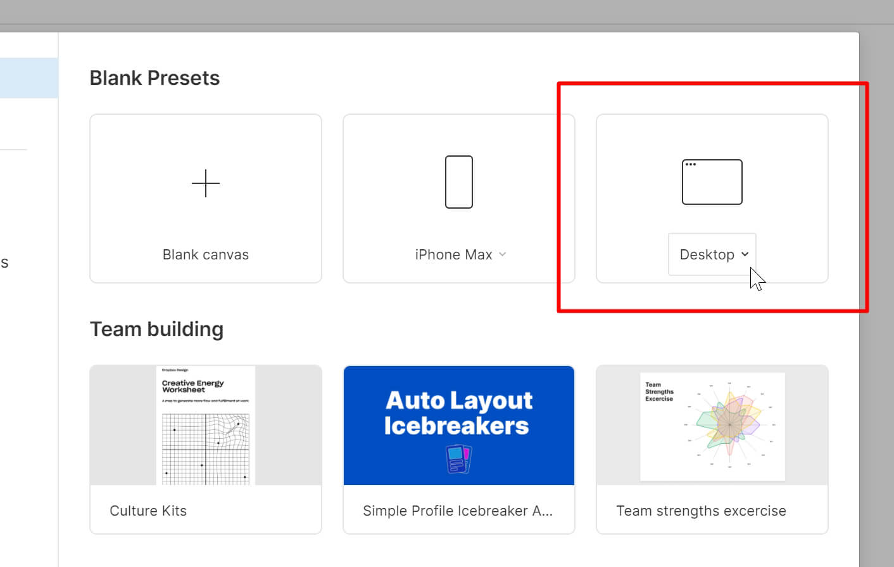
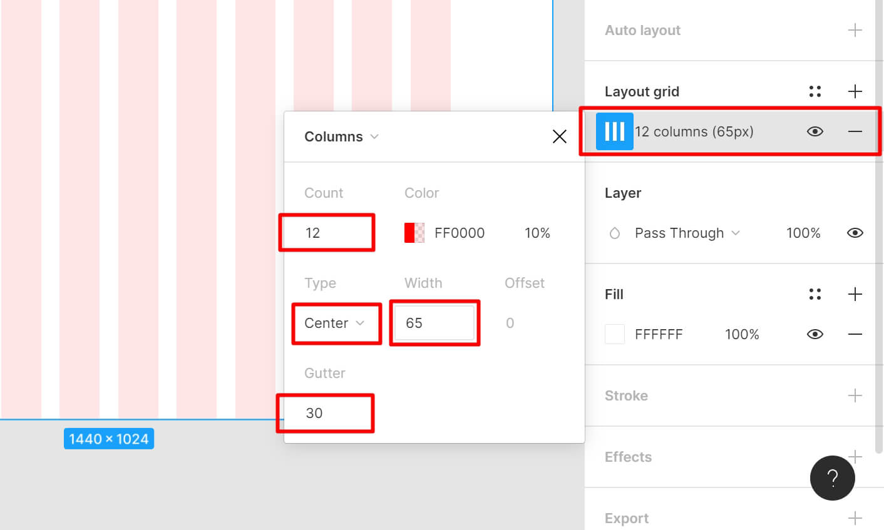
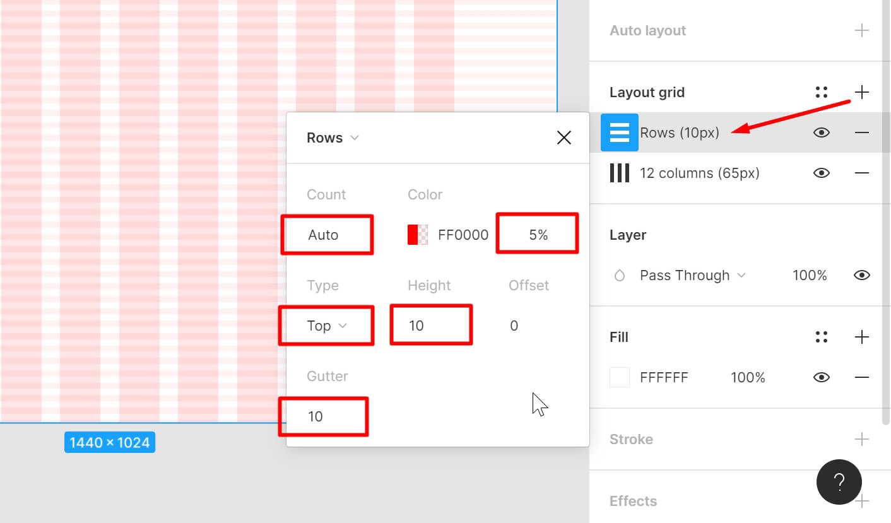
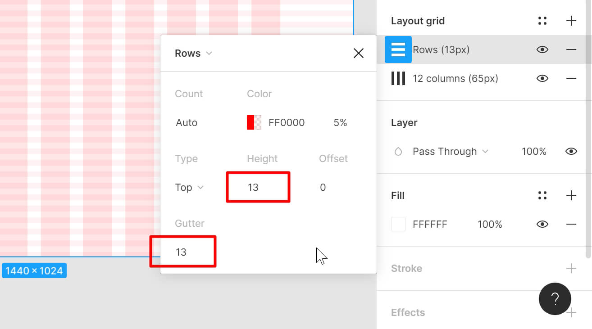
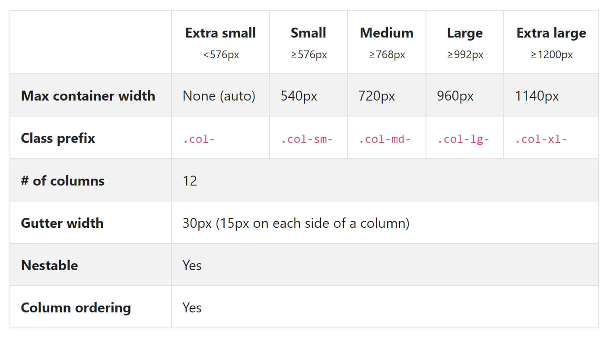
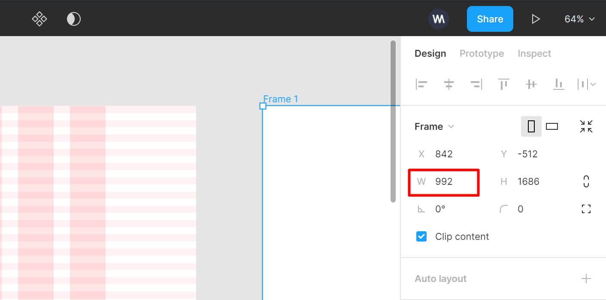
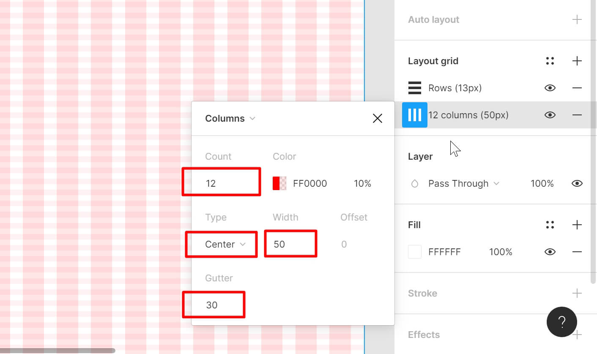

В этом уроке мы рассмотрим создание сетки в Figma - популярнейшем UI/UX инструменте для веб-дизайна. На странице урока вы найдете сетку, которую мы сегодня создадим в Figma и сможете использовать ее в своей работе.

У нас уже были уроки по созданию сетки для различных графических программ, таких, как Photoshop, Adobe XD, Gimp, Inkscape и т.д. Ознакомиться с сопутствующими уроками и материалами:
- Bootstrap сетка. Подробное руководство: Посмотреть урок
- Bootstrap Grid options: Документация
- Photoshop (Сетка, PSD): Посмотреть урок
- Open Source Web Design: Урок и сетка Inkscape
- Сетка для Gimp: Скачать
Результат этого урока (готовые сетки Figma) вы можете скачать здесь:
Настраивается сетка в Figma довольно быстро, я рекомендую настраивать ее для каждого отдельного проекта. На странице урока вы также найдете документ Figma с сетками, которые мы сегодня создадим и сможете использовать их в качестве наглядного примера. В конце урока я покажу, как это сделать.
Итак, для начала создадим новый документ. Обычно я создаю документ для нового проекта с паттерном "Desktop":
Здесь у нас создается фрейм шириной 1440 пикселей. Это среднее универсальное значение. Конечно-же можно сделать макет шире или наоборот уже, но, в целом, начинать создание дизайна можно именно с такой ширины макета. Как я говорил ранее, сетка в Figma настраивается довольно-таки быстро и просто. Однако, что касается двенадцати колоночной сетки, здесь есть подводные камни. Давайте разберемся подробнее.
На панели справа найдем "Layout grid" и добавим сетку со следующими параметрами:
Сетка Bootstrap с настройками по умолчанию имеет общую ширину 1140 пикселей на больших разрешениях (Extra large, см. документацию), но при создании сетки в Figma следует учитывать тот факт, что CSS-сетка имеет дополнительные отступы слева и справа по 15px, а в программе этих отступов нет, можно указывать только общее значение Gutter между колонками. Соответственно, ширина сетки в Figma будет иметь общую ширину 1100px (1140px - 15px - 15px). Размер одной ячейки в этом случае рассчитывается следующим образом. Во-первых, у нас есть 12 промежутков по 30px (11 по 30px в самой сетке и 15px + 15px по бокам). Общая ширина всех отступов сетки составляет 12 * 30 = 360px. Теперь вычтем из общей ширины сетки Bootstrap в CSS ширину всех отступов: 1140px - 360px = 780px. Это общая ширина всех колонок без промежутков. Далее делим общую ширину всех колонок на 12 и получаем ширину одной колонки в системе сеток Bootstrap на самых больших разрешениях: 780px / 12 = 65px.
Обратите внимание в "Type" мы указали "Center" – это значит, что мы без проблем сможем в дальнейшем управлять шириной макета. Например, если макет в результате окажется слишком широким, мы сможем его обрезать. И наоборот, если понадобится увеличить ширину макета, это также можно будет сделать без опасения, что нарисованный в системе сеток контент разъедется и дизайн придется переделывать.
Кроме 12-ти колоночной системы сеток Bootstrap, я также использую и горизонтальную разметку для соблюдения вертикального ритма. Давайте добавим еще одну сетку (Rows) и зададим следующие значения:
Здесь мы указываем "Count" - "Auto" для того, чтобы вся доступная область выбранного фрейма заполнялась сеткой. Для того, чтобы сетка не была такой контрастной и не мешала работе над дизайном, я обычно прибираю значение непрозрачности цвета "Color" до 5%.
Обратите внимание, что "Type" мы можем указать как "Center" или "Top" – это самые популярные параметры горизонтальной сетки для веб-дизайна в Figma. Однако, я рекомендую использовать именно "Top", чтобы в процессе работы, если понадобится сделать макет выше, сетка не съехала и дизайн не пришлось переделывать.
В качестве "Gutter" и "Height" мы указали 10px. Это адекватный вертикальный ритм для большинства проектов, однако вы можете использовать более популярное значение 8px для этих двух параметров. Экспериментируйте.
Внимание! Здесь, стоит добавить, что если вы используете в работе стартер OptimizedHTML 5, то здесь уже определен наиболее оптимальный вертикальный ритм для дефолтного размера текста в 16px (line-height: 1.65). Эти значения являются результатом моего опыта работа над различными сайтами и являются наиболее адекватными для практически любого проекта.
Если вы планируете в дальнейшем использовать стартер OptimizedHTML 5 или общий межстрочный интервал в CSSline-height: 1.65и дефолтный размер шрифта проекта 16px, то при создании дизайна следует устанавливать значения "Gutter" и "Height" для горизонтальной сетки в 13px:

На панели справа найдем секцию "Frame" в Figma, укажем высоту макета 3500 (H) и перейдем к созданию сетки для следующего разрешения.
При создании 12 колоночных сеток в Figma и других графических редакторах для других разрешений следует учитывать, что если для самого большого разрешения ширина фрейма свободная и может меняться, то на остальных разрешениях, которые меньше, ширина фреймов должна быть привязана к соответствующим значениям из документации Bootstrap (см. Bootstrap Grid options):
Соответственно, общая ширина фрейма для следующего разрешения составит 992px (Large):
Ширина одной Bootstrap-колонки для данного разрешения, при условии, что будет отражено 12 колонок, составит 50px. Остальные параметры Bootstrap-сетки такие-же, как у предыдущего фрейма:
Горизонтальная сетка (вертикальный ритм) для этого и последующих разрешений будет иметь те же параметры, что и у первого макета (см. скачанный файл Figma).
Отлично! Переходим к созданию сетки для следующего разрешения. Создаем новый фрейм (по документации Bootstrap ширина 768px). В данном фрейме можно также отобразить 12 колонок. Зачастую, на таком разрешении адаптивный контент еще не "схлопывается", контент максимально вытягивается по высоте. Однако, в зависимости от задач, вы можете указать и другое количество колонок. Ширина одной колонки на таком разрешении составит 30px, если количество колонок указано 12. остальные параметры – как у предыдущих макетов.
Следующий размер фрейма 576px. На таком разрешении целесообразнее отобразить 6 колонок. Ширина одной колонки 60px. Остальные параметры и горизонтальная сетка как у предыдущих макетов.
И последний фрейм сделаем шириной 320px, отобразим 2 колонки, ширина колонки 130px. Остальные параметры как у предыдущих макетов. 320px – это минимальное разрешение в веб-дизайне, так как в настоящее время уже нет устройств, способных отобразить современный веб-контент меньше этого разрешения. Обычно на таком разрешении весь контент вытягивается в длинную ленту, однако иногда бывают случаи, когда необходимо разделить дизайн на колонки и на таком маленьком разрешении. Так как отступы в любом случае одинаковые по краям, можно сделать разлиновку на 2 колонки для того, чтобы в случае необходимости у нас была возможность воспользоваться колоночной системой.
Для того, чтобы воспользоваться созданной в данном уроке системой сеток в Figma, Скачайте архив с документом Figma, распакуйте и перетащите файл в список проектов Figma (Drafts). У вас появится новый документ "Bootstrap-Figma". Откройте его.
Для того, чтобы включить или отключить сетки в Figma, воспользуйтесь горячими клавишамиCtrl+Shift+4.
Любой из фреймов документа "Bootstrap-Figma" вы можете выделить, скопировать Ctrl + C и вставить Ctrl + V в новый проект и использовать в своей работе.